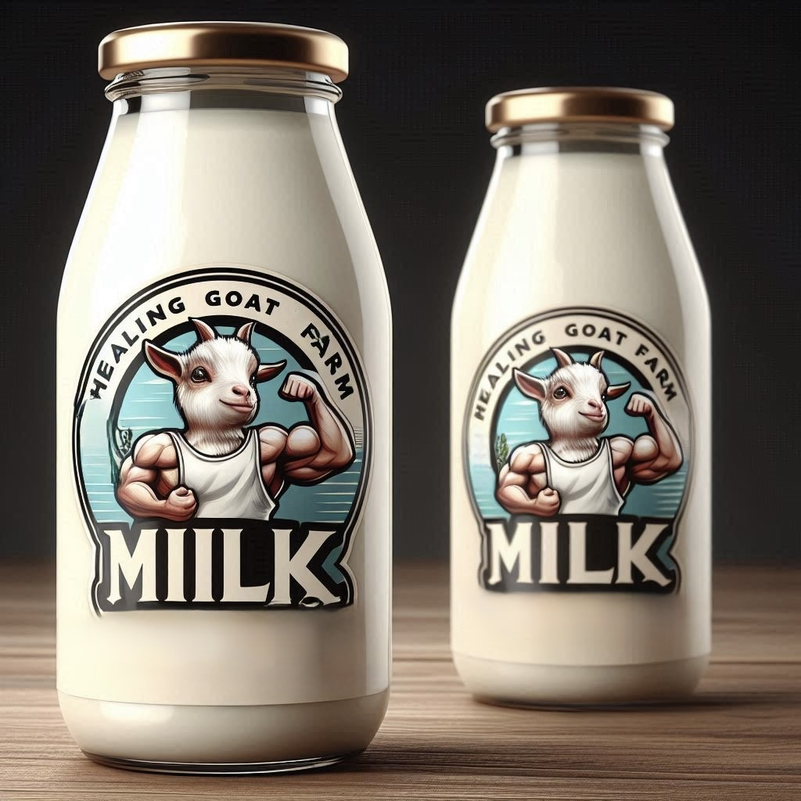

heals everything
Pure & Organic Goat Milk you can completely trust for good health.
We deliver Organic Goat Milk directly from farm to your home with NO middleman. From Organic Fodder to Milking, the complete process is handled by our experts, ensuring you get the best milk.
We have Indian Amritsari Beetal breed goats, originated from Punjab, known for high-quality milking. The milk is tasty, creamy, and similar to cow’s milk. It comes in 100% natural, sustainable packaging, rich in nutrients, easy to digest, lower in fat, and lactose-friendly.
Delivered within 5 hours of milking. Raw & unprocessed – No pasteurization means more natural enzymes and probiotics.
Baby goats are fed first. No artificial hormones. Goats eat only natural fodder from our farms.
Raised in a pollution-free, natural environment. Gentle hand-milking ensures zero stress or discomfort.
We control everything from farm to your home. No shortcuts – just pure, honest farming.
A nutritious alternative to cow’s milk, especially for those with digestive issues, mild lactose intolerance, or seeking extra nutrients.
Read more in this scientific study.